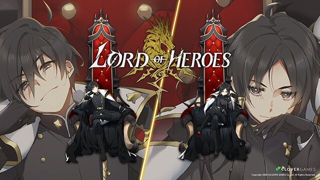

Attribute
- 물의 수호령 리바이어선: 소유자에게 대양의 축복을 부여한다는 이야기가 전해진다
- 불의 수호령 이프리트: 소유자에게 타오르는 투지를 부여한다는 이야기 전해진다
- 대지의 수호령 베히모스: 소유자에게 흔들리지 않는 의지를 부여한다는 이야기가 전해진다
- 빛의 수호령 오베론: 소유자에게 새벽의 영광을 부여한다는 이야기가 전해진다
- 어둠의 수호령 닉스: 소유자에게 고요한 안식을 부여한다는 이야기가 전해진다
속성과 상성: 속성이란 몬스터 및 영웅 이 보유하고 있는 고유 성질이며, 물, 불, 대지, 빛, 어둠. 총 5가지 속성이 있다.
속성에 따라 상성이 존재하며 상성관계는 물>불>대지>물 이며 빛과 어둠은 서로에게만 상성이다.